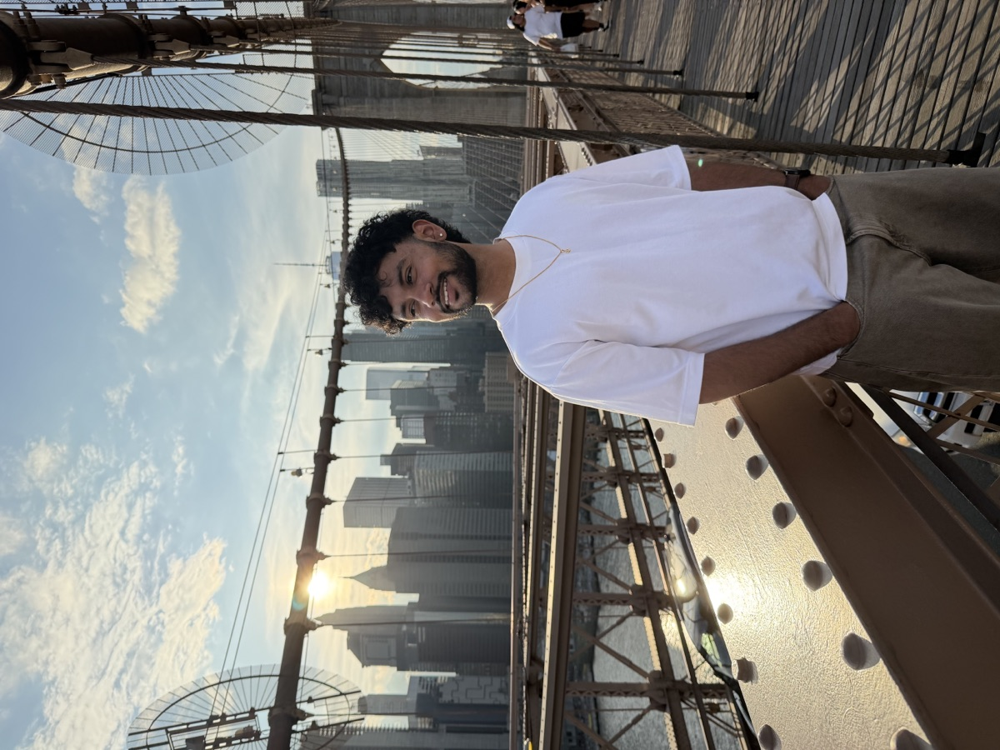

Hi, I'm Mayur! I'm a Data Science student at UC San Diego, graduating in June 2027. I work in Python, SQL, and R, and I enjoy turning messy data into clear insights, from building cost pipelines for AI agents at Revinci AI to analyzing customer reviews for Beats by Dre. Before UCSD, I studied at UC Santa Cruz, where I was captain of the NCAA Division III men's tennis team.
